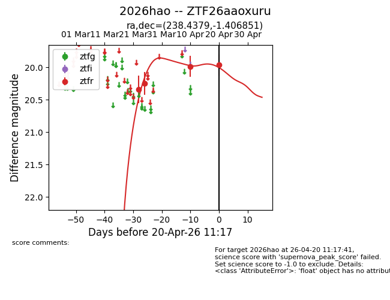
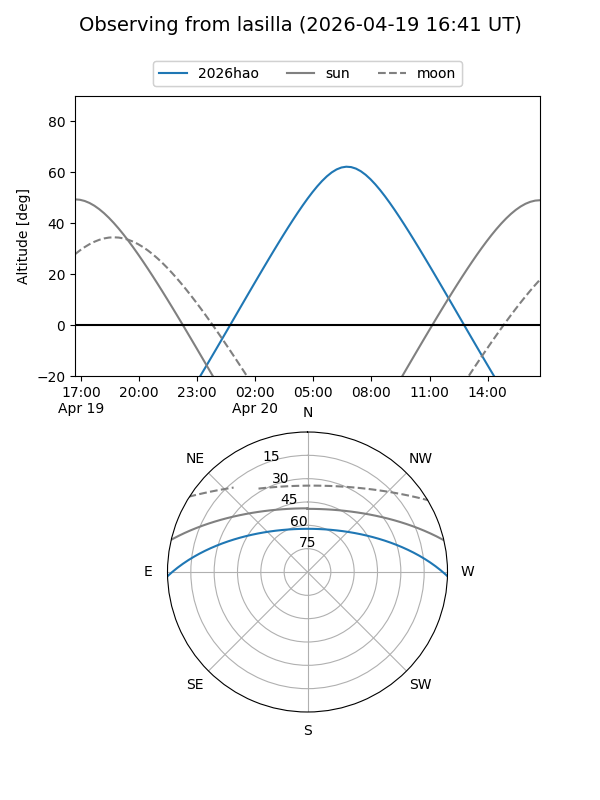
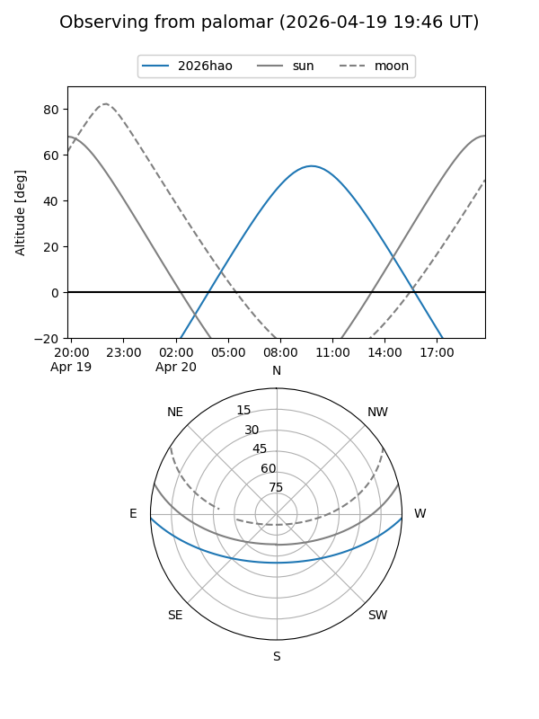
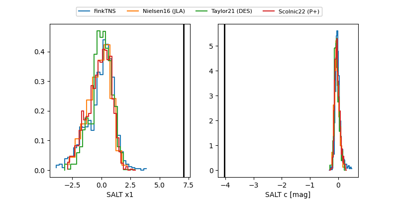

2026hao
Target 2026hao at 2026-04-20 11:27
Aliases and brokers:
FINK: link
Lasair: link
ALeRCE: link
TNS: link
YSE: link
alt names
ZTF26aaoxuru (ztf,fink_ztf)
2026hao (tns,yse)
Coordinates:
equatorial (ra, dec) = 238.4379,-1.40685
equatorial (HMS+DMS) = 15:53:45.09,-01:24:24.66
galactic (l, b) = (7.4087,+37.70157)
Flags:
Photometry:
last ztfr=19.97
4 ztfr detections
Lightcurve

Visibility


Additional plots
